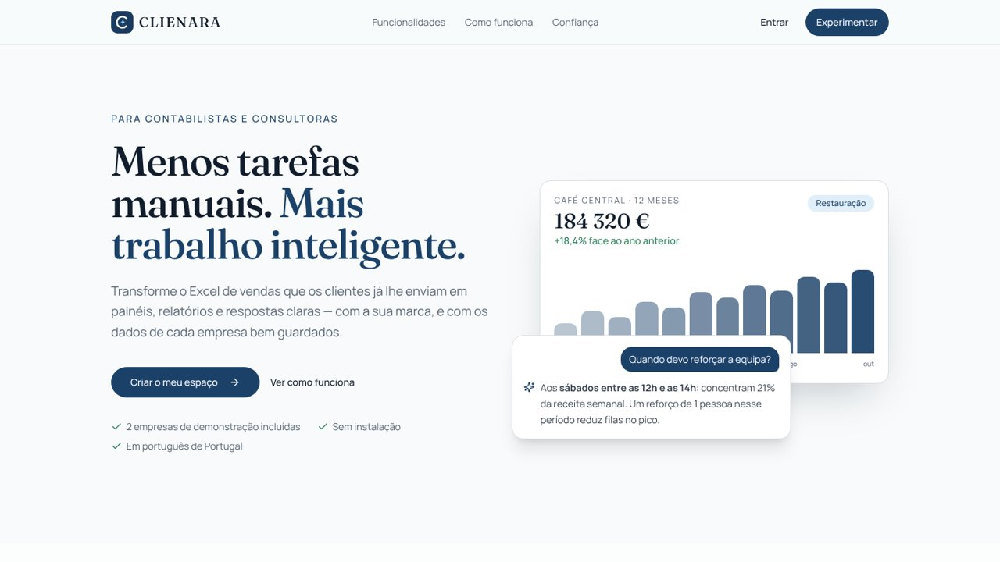
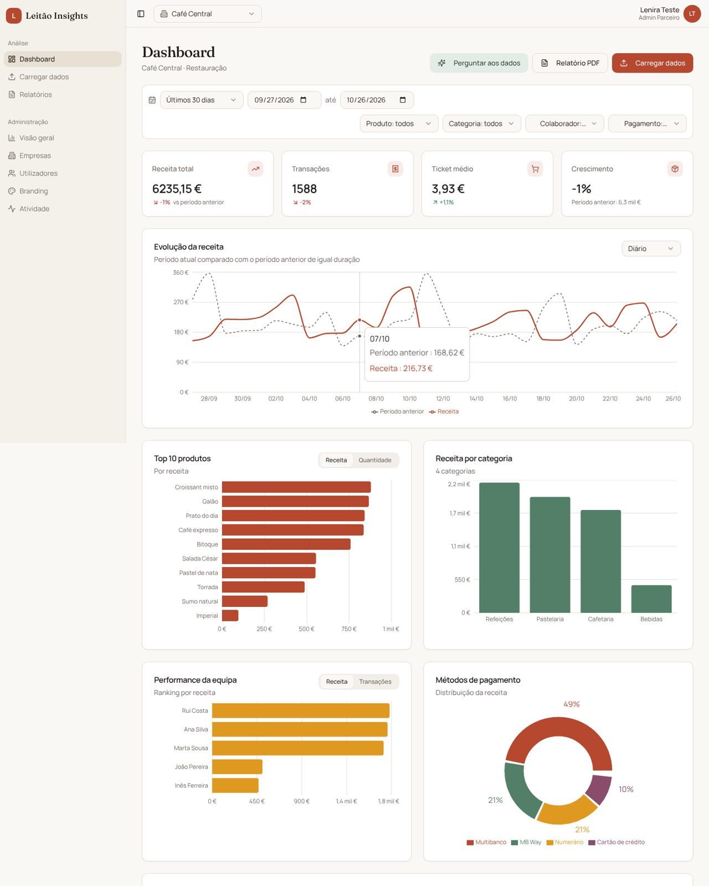
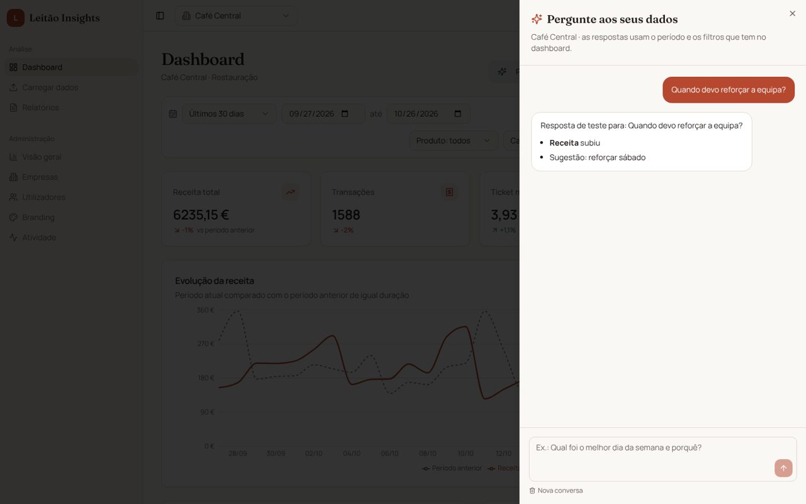
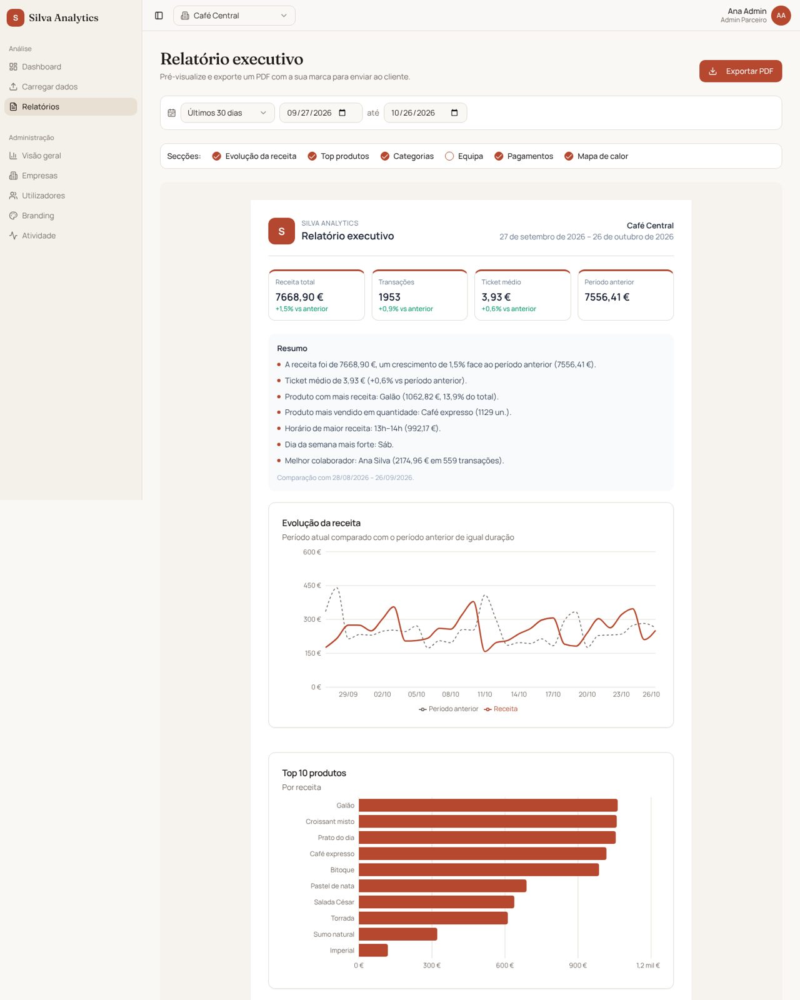

O problema
O Excel que ninguém tem tempo de transformar
Os gabinetes de contabilidade recebem todos os meses ficheiros de vendas dos clientes, cada um exportado de um programa diferente. Transformar isso em gráficos e conclusões leva horas e acaba quase sempre por não se fazer.
A CLIENARA lê o ficheiro, percebe sozinha que coluna é o quê, valida cada linha e monta os painéis e o relatório. O parceiro mostra tudo com a sua própria marca, e o cliente pode fazer perguntas em português.
O que faz
Do ficheiro à conversa com o cliente
Três papéis: o administrador do parceiro gere empresas e marca, o gestor carrega e analisa, o visualizador só consulta.
Dados
Carregar Excel ou CSV
Aceita os formatos portugueses: datas dia/mês, valores 1.234,56 € e ficheiros com acentos do Windows.
«vendas_outubro.xlsx»
Mapeamento inteligente
Sugere a coluna certa para cada campo a partir do nome (PT/EN) e do tipo de dados, e guarda modelos para reutilizar.
«Artigo», «Família», «Total (€)»
Validação linha a linha
Mostra quantas linhas são válidas e porquê as outras foram rejeitadas. Um upload pode ser anulado.
«Linha 14: valor inválido»
Análise
Painel
Receita, transações, ticket médio, crescimento, top de produtos, equipa, pagamentos e mapa de calor dia × hora.
Pergunte aos seus dados
O cliente escreve perguntas em português e recebe respostas baseadas só nos números do período.
«Quando devo reforçar a equipa?»
Relatório PDF
Com o logótipo e as cores do parceiro e um resumo escrito automaticamente.
Gestão
White-label
Logótipo, cores e nome da plataforma de cada parceiro, aplicados em toda a interface e no PDF.
Visão do parceiro
Empresas em queda de receita e sem dados recentes, ordenadas por prioridade.
Segurança e RGPD
Registo de auditoria, exportação e apagamento de dados de cada empresa.
Ecrãs
Como se vê




Por dentro
Do Excel do cliente à resposta da IA
Cada passo protege os dados: cada empresa só é vista por quem tem acesso a ela.
- Browser · leitura do ficheiro
Ler e perceber o ficheiro
A app lê o Excel ou CSV no próprio browser, deteta o tipo de cada coluna e sugere o mapeamento.
- Browser · validação
Converter e validar
Datas, valores e horas passam para um formato único. Cada linha inválida fica explicada.
- Servidor · base de dados
Guardar por empresa
As vendas são gravadas em lotes, ligadas à empresa e ao parceiro. As regras de segurança impedem que outro parceiro as veja.
- Browser · cálculos
Montar o painel
Os indicadores, rankings e o mapa de calor são calculados com os filtros escolhidos.
- Servidor · IA
Responder com privacidade
Para a IA só segue um resumo com totais, nunca vendas individuais nem clientes. A chamada corre no servidor e cada pergunta fica registada.
Como foi feito
Tecnologias
React, TypeScript, Vite e Tailwind · Supabase · SheetJS · IA integrada · jsPDF e html2canvas · testes com Vitest, testes SQL e Playwright.
Lições
O que se encontrou e como ficou resolvido
Sete lições do guia de construção, resumidas.
A primeira versão parecia completa, mas os relatórios diziam "em breve" e os valores 1.234,56 € eram guardados como 1,23.
Fazer o percurso completo como cliente antes de mostrar: criar conta, carregar dados, ver o resultado.
Uma regra de segurança deixava qualquer pessoa mudar o seu parceiro e ler as vendas de outro.
O utilizador só altera o próprio nome. Tudo o resto passa por funções que verificam quem pede, com 22 testes de ataque.
Com 32 mil vendas, o painel do parceiro demorava 10,8 segundos.
A regra de segurança passou a ser calculada uma vez por consulta: 46 milissegundos.
Os ficheiros portugueses trazem datas dia/mês, vírgulas decimais e acentos estragados.
Uma conversão própria para datas, valores e codificações, coberta por testes automáticos.
Enviar vendas à IA poria em risco os dados dos clientes.
Só seguem totais agregados, e um teste garante que não há dados pessoais no que é enviado.
No telemóvel, os gráficos saíam 228 px para fora do ecrã.
As colunas dos gráficos passaram a poder encolher, e o mapa de calor desliza dentro do seu cartão.
Em números
O projeto em números
Com franqueza
Limites atuais
- Os dados chegam por upload manual de ficheiros.
- Ainda não envia convites nem relatórios por email.
- Ainda não há gabinetes reais a usar a plataforma.
A seguir
Próximos passos
- Ligação direta a programas de faturação (SAF-T PT, sistemas de caixa).
- Envio de convites e relatórios por email, com relatórios agendados.
- Domínio próprio para cada parceiro.
O meu papel
Lenira Leitão
A ideia, as decisões de produto e a direção de cada correção foram meus. O código foi escrito com ferramentas de IA, a partir dos meus pedidos.
Aprendi que "tem segurança" não é o mesmo que "está seguro": é preciso tentar entrar como atacante e provar que falha.